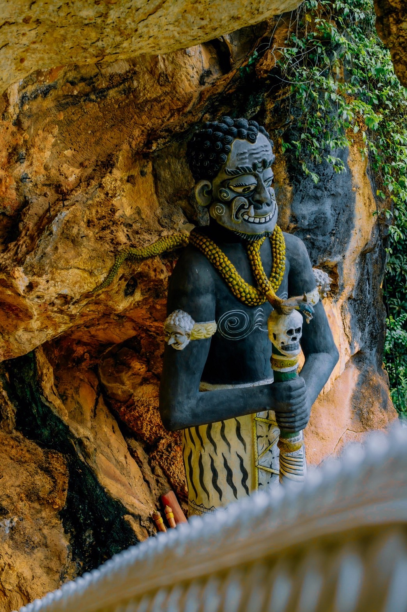

พระพุทธไสยาสน์หรือพระนอน

พระนอนวัดคูหาภิมุข พระพุทธไสยาสน์วัดคูหาภิมุข ซึ่งประชาชนทั่วไปเรียกว่า พระนอนวัดหน้าถ้ำ ประดิษฐานอยู่ภายในถ้ำวัดคูหาภิมุขอำเภอเมือง จังหวัดยะลา อยู่ห่างจากตัวเมืองประมาณ 7 กิโลเมตร เป็นพระนอนที่เก่าแก่ที่สุดองค์หนึ่งของประเทศไทย
พระนอนวัดคูหาภิมุข (วัดหน้าถ้ำ) ตามตำนานพื้นเมืองกล่าวว่า ในครั้งที่สร้างพระบรมธาตุเมืองนครศรีธรรมราช เจ้าเมืองต่าง ๆ ในแถบนั้น ที่ยังอยู่ในอำนาจของพระมหากษัตริย์แห่งราชอาณาจักรศรีวิชัย อันได้แก่ เมืองพัทลุง ปัตตานี กลันตัน ตรังกานู ป่าหัง และเมืองไทรบุรี ได้ทราบข่าวการสร้างพระบรมธาตุดังกล่าว ใคร่จะร่วมการกุศลด้วย จึงได้พากันนำสิ่งของต่าง ๆ บรรทุกเรือสำเภา แล่นใบมายังเมืองนครศรีธรรมราช
เพื่อจะร่วมสร้างพระบรมธาตุ แต่เมื่อเดินทางมาถึงก็ปรากฎว่า พระบรมธาตุได้สร้างเสร็จแล้ว บรรดาเจ้าเมืองต่าง ๆ ดังกล่าวเมื่อไม่ได้มีโอกาสร่วมพระบรมธาตุ ก็เดินทางกลับเมืองตนด้วยความผิดหวัง เมื่อเรือแล่นมาถึงชายทะเลแห่งหนึ่ง เห็นมีภูเขาสูงใหญ่อยู่ริมฝั่งทะเลก็พากันจอดเรือแวะพัก แล้วขึ้นไปสำรวจดูเขาลูกนั้น ก็ได้พบถ้ำใหญ่แห่งหนึ่ง ภายในถ้ำมีความวิจิตรงดงามยิ่งนัก บรรดาเจ้าเมืองต่าง ๆ เหล่านั้นจึงได้ปรึกษาหารือกันว่า
เมื่อไม่ได้มีโอกาสสร้างพระบรมธาตุแล้ว ก็น่าจะมาช่วยกันสร้างพระพุทธไสยาสน์ขึ้นไว้ในถ้ำแห่งนี้ จึงได้ร่วมกันสร้างพระนอนองค์ใหญ่ ขึ้นเมื่อประมาณปี พ.ศ. 1300 มีขนาดยาวประมาณ 81 ฟุต รอบองค์พระประมาณ 35 ฟุต พระบาททั้งสองซ้อนกันสูงประมาณ 10 ฟุต ซึ่งก็คือ พระพุทธไสยาสน์วัดคูหาภิมุข(วัดหน้าถ้ำ) ในปัจจุบัน
ปัจจุบันเมื่อเวลาผ่านไปประมาณกว่า 1200 ปี ชายฝั่งทะเลได้ถอยห่างจากภูเขาลูกนี้ออกไป ประมาณ 40 กิโลเมตร แต่มีร่องรอยที่แสดงว่าน้ำทะเลเคยท่วมถึงบริเวณนี้ คือมีเปลือกหอยชนิดต่าง ๆ อยู่ตามผนังถ้ำวัดคูหาภิมุข(วัดหน้าถ้ำ) ด้านล่าง
"พระนอนวัดหน้าถ้ำ" พระนอนองค์นี้มีลักษณะของส่วนประกอบที่แปลกออกไปจากพระนอนองค์อื่น คือมีพญานาคแผ่พังพานอยู่เหนือเศียรพระนอน ทำให้มีผู้สันนิษฐานถึงที่มาของพระนอนองค์นี้ว่า เดิมอาจเป็นเทวรูปพระนารายณ์บรรทมสินธุ์ ตามศาสนาพราหมณ์ ต่อมาเมื่อพระพุทธศาสนาได้เผยแผ่เข้ามายังดินแดนส่วนนี้ จึงได้ดัดแปลงเทวรูปดังกล่าวให้เป็นพระพุทธรูปดังที่เป็นอยู่ในปัจจุบัน (วัดหน้าถ้ำ)
ย้อนกลับ